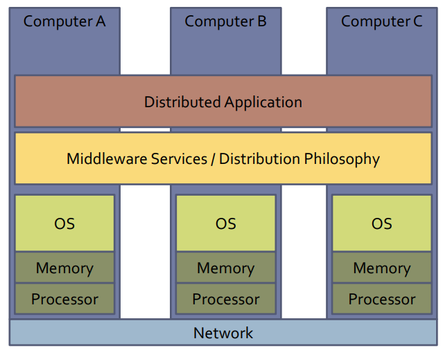
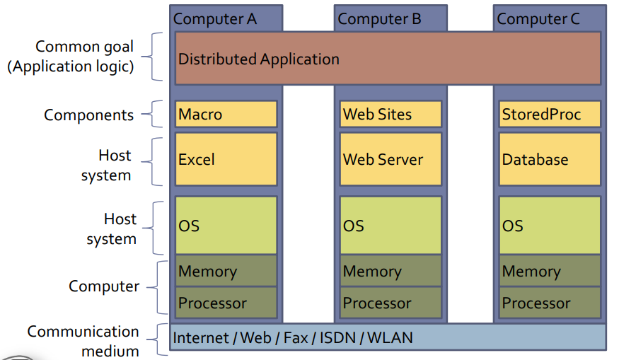

Definitions of Distributed Systems
- Andrew S. Tanenbaum and Maarten van Steen:
- „A distributed system is a collection of independent computers that appears to its users as a single coherent system.“
- Alexander Schill and Thomas Springer:
- „Ein Verteiltes System setzt sich aus mehreren Einzelkomponenten auf unterschiedlichen Rechnern zusammen, die in der Regel nicht über gemeinsamen Speicher verfügen und somit mittels Nachrichtenaustausch kommunizieren, um in Kooperation eine gemeinsame Zielsetzung – etwa die Realisierung eines Geschäftsablaufs – zu erreichen.“
Example of a layered approach:
 A distributed system is a loosely coupled set of of components which run on different computers' host systems and coordinate by means of message exchange over a communication medium to reach a common goal. A host system is an autonomous runtime environment, which provides a component with the necessary execution and communication resources operated by that host system. Examples of host systems are operating systems, databases, a web server or middleware.
Example: Interaction of host systems 
Challenges
Implementation of distributed systems faces numerours challenges:
- Heterogeneity
- bringing the resources and the user together, remote resource access by means of cooperation/integration
- Openess
- property of a distributed system
- for instance in terms of interoperability, flexibility and customizability
- Security
- jeopardizes the common objective if lacking
- for example Denial of Service or security of mobile code
- Scalability
- ability to compensate for the increasing demand by adding resources to ensure the effectivity and efficiency of the DS (distributed system)
- for example availability, geographical scalability; tightly bound to availability, i.e. cache and replication
- Availability / Error handling
- detection of errors in components, hosts, computers
- error masking through configuration
- error tolerance through redundancy and recovery/self healing
- Concurrency
- consistency of shared resources
- synchronization of joint actions
- Transparency
- conceal the single component separation in a DS from the user for the system to be percieved as a whole
Concepts to solve the challenges
- System Models
- specific models for particular aspects of a system
- fundamental models:
- formal description models (eg interaction, error and security)
- for instance path-time diagrams, protocol automation, queuing models
-
architectural models - system architectures
- placement of components and their relations within a distributed system
- for instance Client-Server or Peer-to-Peer models
- Communication
- is the foundation of a decentralized systems' realization
- finding communication partners
- Support systems and tools
- middleware
- software development
- name- and directory services
- Web as information space
- web-based protocols, SOA (service-oriented architecture), Web Services Stack
- related aspects: synchronization, transaction, security